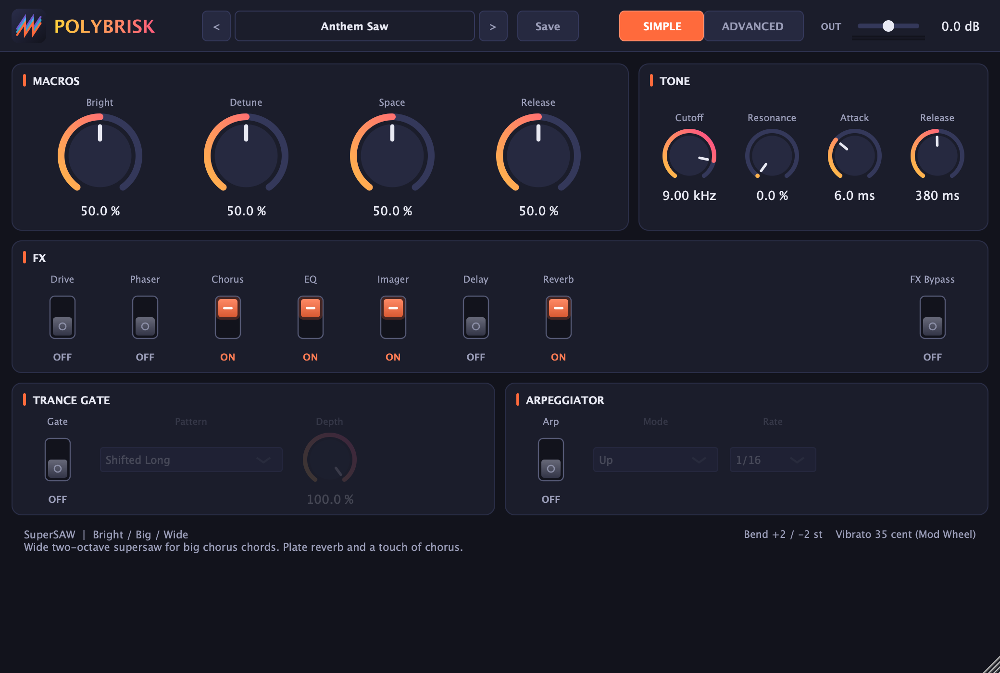
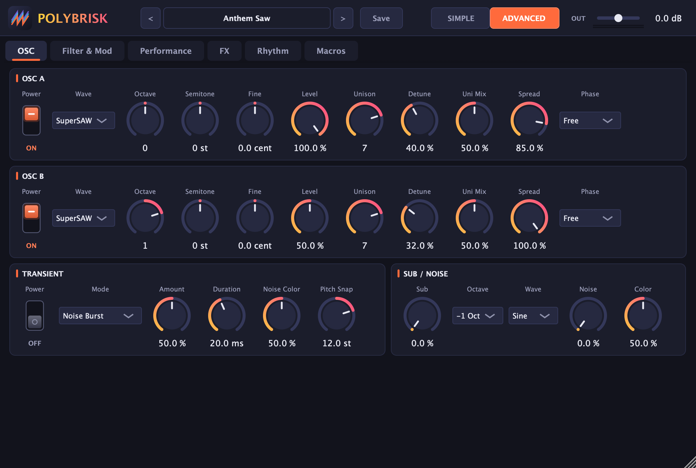
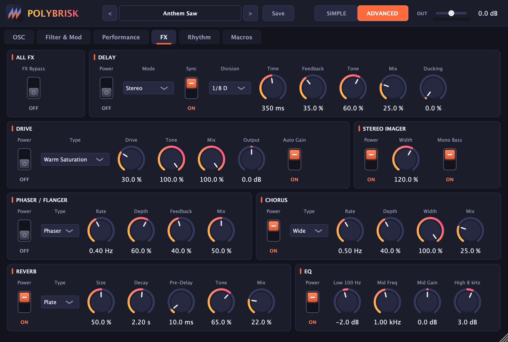
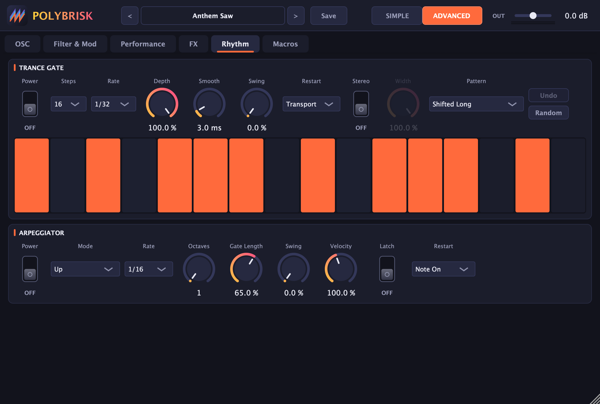
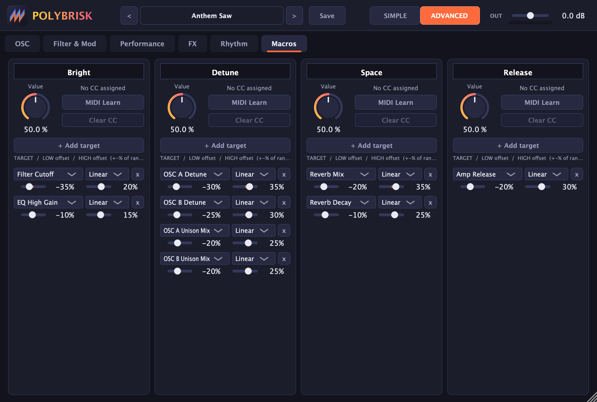
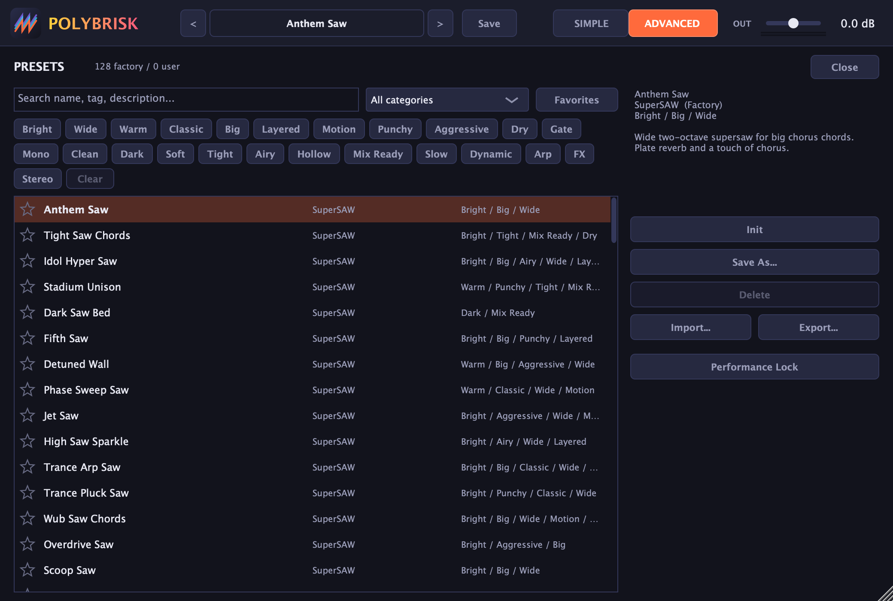

POLYBRISK
選んで弾けば、そのまま使える。
SuperSAW・Synth Brass・Stab のためのポリフォニック・シンセ。
J-POP、アイドルポップス、シンセポップ、ダンスポップ。明るくて輪郭のはっきりした音が欲しいときのための、macOS 用ソフトウェア・シンセサイザーです。
特長
何でもできるシンセではありません。ポップスの上モノを、迷わず手早く作るための道具です。音色を選んで、4 つのノブで曲に合わせる。すぐに使えます。
2 つのオシレーター
OSC A と B のそれぞれで、Saw・SuperSAW・Pulse・Square・Triangle・Sine・Noise を選べます。ユニゾンは最大 9 本。厚く重ねても、音程の芯がぼやけません。
アタックを足す Transient
音の頭にだけ、短いノイズやピッチの動きを足せます。スタブやブラスの「パキッ」とした立ち上がりを、音色の本体を変えずに作れます。
性格の違う 3 つのフィルター
太く温かい Analog、色付けのない Clean、輪郭の立つ Punch。それぞれにローパス、ハイパス、バンドパスの 5 つのモードがあります。
音色ごとに変わる 4 つのマクロ
Bright、Detune、Space など、その音色で動かしたいものが 4 つのノブに割り当ててあります。ノブの中央が音色の基準で、そこから左右に回して曲に合わせます。
7 種類のエフェクト
Drive、Phaser / Flanger、Chorus、3 バンド EQ、Stereo Imager、Delay、Reverb。Delay と Reverb は原音に重ねて掛かるので、残響を深くしても音の芯が残ります。
Simple と Advanced
普段は Simple だけで足ります。マクロのほかに、明るさ（Cutoff / Resonance）と音の立ち上がり・余韻（Attack / Release）をその場で直せます。作り込みたいときは Advanced へ。画面を切り替えても音は変わりません。
Trance Gate と Arpeggiator
和音を押さえるだけで、Trance Gate がリズムを刻み、Arpeggiator が音を分散させます。どちらも DAW のテンポに合い、同時にも使えます。Gate は左右で別のパターンにもできます。
弾きやすさ
ピッチベンドの幅は、上と下を別々に最大 48 半音まで決められます。モジュレーションホイールにはビブラートが最初から割り当ててあり、深さ・速さ・掛かり始めるまでの時間を調整できます。
16 音まで同時に鳴る
17 音目を弾いたときは、消えかけの小さい音から順に譲ります。音が不自然に途切れたり、ノイズが出たりしません。単音で弾く Mono と Legato、音程が滑るグライドもあります。
音を動かす LFO
フィルター、パルス幅、音程、音量を、ゆっくり、あるいはテンポに合わせて揺らせます。低音を支える Sub と、息づかいを足す Noise も備えています。
DAW で安心して使える
音切れの原因になる処理を、音を出している最中には行いません。音色の設定はプロジェクトの中にすべて保存されるので、開き直せば同じ音が戻ります。
音の流れ
鍵盤を弾いてから音が出るまでの道筋です。上の段から下の段へ、段の中では左から右へ進みます。
128 のプリセット
数字を少し変えただけの音色で数を増やしてはいません。128 音色のどれも、使いどころを決めて 1 つずつ作り、聴いて直しました。音量は測ってそろえてあるので、切り替えても大きさが極端に変わりません。カテゴリごとの数は次のとおりです。
デモは POLYBRISK の出力をそのまま録ったものです。ほかのエフェクトは掛けていません（テンポ 128）。
画面
普段使う Simple と、音を作り込む Advanced、音色を探すプリセットブラウザーです。






動作環境
- OS
- macOS 12 以降
- CPU
- Apple Silicon。Intel Mac でも動くように作っていますが、実機ではまだ試せていません
- 形式
- Audio Unit（.component）、VST3（.vst3）、Standalone アプリ
- 種類
- 音源（MIDI 入力、ステレオ出力）
- サンプルレート
- 44.1 / 48 / 88.2 / 96 kHz
- 対応しないもの
- Windows、AAX、CLAP、AUv3、MPE